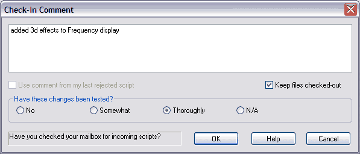

The check-in operation creates a permanent snapshot of your project. Usually you do the check-in after completing a well-defined task. The task might have consisted of several file edits; possibly combined with file deletions, additions, renames, or moves. Code Co-op lets you check all these changes in one atomic operation. Selective, or even single-file check-ins are also possible, but in most cases you will be pressing the Check In All Files button in the Check-In Area. You can also specify the level of testing done on your changes, if applicable, by clicking the appropriate radio button.
It's good practice to associate a description with such a snapshot, that's why Code Co-op will ask you for a comment. This comment will appear in your (and others') Project History.

Every check-in generates a script of changes that is sent to other members of the project. This script will apply your changes to their copies of the project. It will also carry your check-in comments to others.